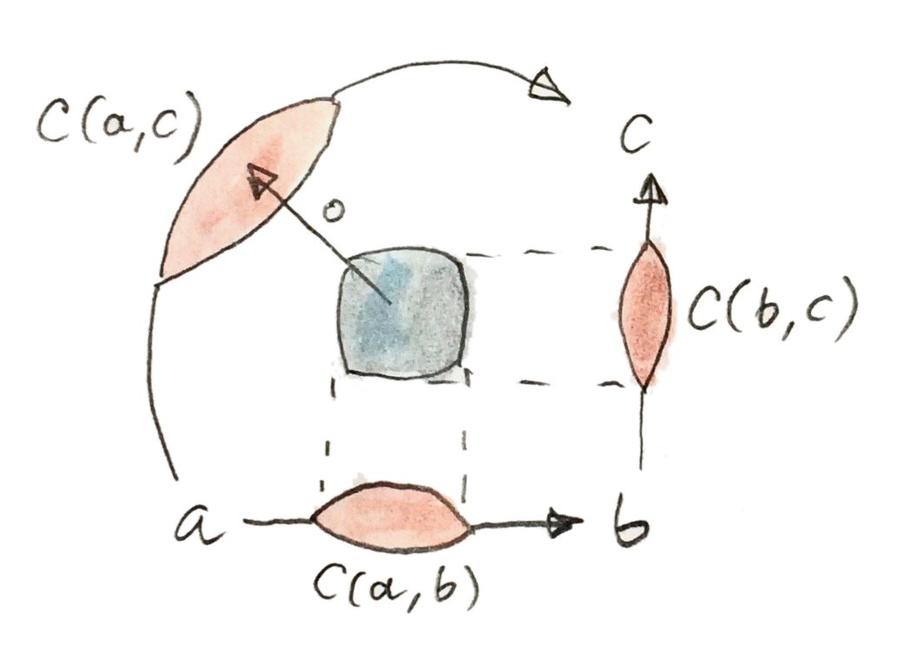

29 Categoryที่ถูกเพิ่มค่า(Enriched Categories) (Sketch)
Categoryนั้นมีขนาดเล็กถ้าวัตถุของมันก่อให้เกิดset แต่เรารู้ว่าได้มีสิ่งที่ใหญ่กว่าset โดนเฉพาะเช่นsetของsetทั้งหมดไม่สามารถถูกสร้างภายในทฤษฎีsetทั่วไป(ทฤษฎีของZermelo-Fraenkelที่สามารถเพิ่มเติมด้วยสัจพจน์การเลือก) ดังนั้นcategoryของsetทั้งหมดต้องใหญ่ ได้มีเทคนิคอย่างจักรวาลของGrothendieckที่สามารถถูกใช้ในการนิยามชุดที่ไปยิ่งกว่าsets เทคนิคเหล่านี้ให้เราได้พูดเกี่ยวกับcategoryขนาดใหญ่ต่างๆ
categoryที่มีขนาดเล็กเฉพาะแห่ง(locally small)ถ้าmorphismsระหว่างสองวัตถุใดๆก็ตามก่อให้เกิดset ถ้าพวกมันไปม่ก่อเป็นset เราต้องคิดบางนิยามใหม่ โดยเฉพาะเช่น มันมายความว่าอะไรในการประกอบmorphismถ้าเราไท่สามารถเลือกพวกมันจากset? วิธีแก้คือการที่เราต้องbootstrapพวกเราเองโดยการแทนที่hom-setsที่คือวัตถุต่างๆใน\(\textbf{Set}\)ที่วัตถุต่างๆจากสมาชิกบางcategoryอื่นๆ\(\textbf{V}\) ความแตกต่างคือว่า โดนทั่วไปแล้ววัตถุนั้นไม่มีสมาชิก ดังนั้นเราจึงไม่สามารถที่จะพูดเกี่ยวกับmorphismเดี่ยวๆได้อีกต่อไป เราต้องนิยามคุณสมบัติทั้งหมดของcategoryที่ถูกเพิ่มค่าในรูปแบบของการดำเนินงานที่สามารถใช้การดำเนินการบนhom-objectsโดยรวม ในการที่จะทำแบบนั้น categoryที่ให้hom-objectsต้องมีโครงสร้างเสริม(มันต้องเป็นcategoryแบบmonoid) ถ้าเราเรียกcategoryแบบmonoidนี้ว่า\(\textbf{V}\) เราสามารถพูดเกี่ยวกับcategory\(\textbf{C}\)ที่ถูกเพิ่มค่าข้างบน\(\textbf{V}\)
นอกเหนือจากเหตุผลทางขนาก เราอาจจะมีความสมใจในการgeneralizeของhom-setsไปยังบางอย่างที่มีโครงสร้างมากกว่าแค่sets ตัวอย่างเช่น categoryแบบดั้งเดิมไม่มีนวคิดของระยะทางระหว่างวัตถุ สองวัตถุนั้นมีแค่ถูกเชื่อมโดยmorphismsหรือไม่ วัตถุทั้งหมดที่ถูกเชื่อมไปยังวัตถุที่ให้มาคือneighborของมัน ไม่เหมือนในชีวิตจริงที่ในcategory เพื่อนของเพื่อนของเพื่อนนั้นใกล้กว่าผมในฐานะเพื่อนสนิท ในcategoryที่ถูกเพิ่มค่าที่เหมาะสม เราสามารถที่จะนิยามระยะทางระหว่างวัตถุ
ได้มีอีกหนึ่งเหตุผลในทางปฏิบัติอย่างมากในการที่จะมีประสบการณ์ในการใช้งานcategoryที่ถูกเพิ่มค่าและนั้นก็เพราะว่า แหล่ข้องมูลที่มีประโยชน์อย่างมากเกี่ยวกับcategoryอย่างnLab1นั้นส่วนใหญ่ถูกเขียนในรูปแบบของcategoryที่ถูกเพิ่มค่า
29.1 ทำไมcategoryแบบmonoid?
ในการสร้างcategoryที่ถูกเพิ่มค่า เราต้องจำไว้ว่าเราควรที่จะนำนิยามทั่วๆไปกลับในตอนที่เราแทนที่categoryแบบmonoidด้วย\(\textbf{Set}\)และhom-objectsด้วยhom-sets วิธีการที่ดีืี่สุดในการทำแบบนี้คือการเริ่มด้วยนิยามทั่วๆไปและเปลี่ยนนิยามไปเรื่อยๆในแบบที่ไร้จุด นั้นก็คืนโดยที่ไม่มีีการเรียกสมาชิกของsetออกมา
เรามาเริ่มด้วยนิยามของการประกอบกัน โดนทั่วไปแล้วมันนำคู่ของmorphismsที่ตัวหนึ่งมาจาก\(\textbf{C}(b,c)\)และอีกตัวหนึ่งมาจาก\(\textbf{C}(a,b)\) และโยงมันไปยังmorphismจาก\(\textbf{C}(a, c)\) ในอีกความหมายหนึ่งมันคือการโยง
\[ \textbf{C}(b,c)\times\textbf{C}(a, b)\to\textbf{C}(a, c) \]
นี้คือfunctionระหว่างset ตัวหนึ่งของพวกมันเป็นproductแบบCartesianของสองhom-sets สูตรนี้นั้นสามารถถูดgeneralizeโดยการแทนที่productแบบCartesianด้วยบางอย่างที่กว้างกว่า productของcategoryอาจจะใช้ได้แต่เราสามารถไปไกลกว่านี้และใช้productแบบtensorแบบทั่วๆไปที่สุด
ต่อมาคือmorphisms identity แทนที่จะเลือกสมาชิกเดียวๆจากhom-sets เราสามารถนิยามพวกมันโดยการใช้functionจากsetที่มีสมาชิกเดียว\(1\)ว่า
\[ j_a::1\to\textbf{C}(a,a) \]
ในอีกครั้งสามารถแทนที่setที่มีสมาชิกเดียวด้วยวัตถุสุดท้ายแต่เราสามารถไปไกลกว่างโดนการแทนที่มันด้วยunit\(i\)ของproductแบบtensor
ในการที่คุณได้เห็น วัตถุที่นำมาจากบางcategoryแบบmonoid\(\textbf{V}\)นั้นคือตัวเลือกที่ดีสำหรับการแทนที่hom-set
29.2 categoryแบบmonoid
เราได้พูดไปแล้วสำหรับcategoryแบบmonoidก่อนหน้านี้ แต่มันคุ้มที่จะกล่าวถึงนิยามอีกครั้ง categoryแบบmonoidนิยามproductแบบtensorที่คือbifunctor
\[ \otimes :: \textbf{V}\times{}\textbf{V} \to \textbf{V} \]
เราต้องการproductแบบtensorที่มีคุณสมบัติการสลับหมู่แต่มันเพียงพอในการที่จะบรรลุความการสลับหมู่ จนไปถึงisomorphismธรรมชาติ isomorphismนี้นันถูกเรียกว่าassociator ส่วนประกอบมันคือ
\[ \alpha_{a b c} :: (a \otimes b) \otimes c \to a \otimes (b \otimes c) \]
มันต้องเป็นธรรมขาติในทั้งสามarguments
categoryแบบmonoidก็ต้องนิยามวัตถุunitพิเศษ\(i\)ที่ทำหน้าที่ในฐานะunitของproductแบบtensor ในอีกครั้งไปถึงisomorphismธรรมชาติ o isomorphismsทั้งสองถูกเรียกว่าunitorช้ายและขวาตามลำดับและส่วนประกอบของพวกมันคือ
\[ \begin{align*} \lambda_a & :: i \otimes a \to a \\ \rho_a & :: a \otimes i \to a \end{align*} \]
associatorและunitorsต้องบรรลุเงื่อนไขของความเข้ากันได้อย่าง
categoryแบบmonoidนั้นถูกเรียกว่าสมมาตรถ้าได้มีisomorphismธรรมชาติที่มีส่วนประกอบอย่าง
\[ \gamma_{a b} :: a \otimes b \to b \otimes a \]
ที่“กำลังสองแล้วเท่ากับหนึ่ง”
\[ \gamma_{b a} \circ \gamma_{a b} = \operatorname{id}_{a \otimes b} \]
และที่ตรงกันกับโครงสร้างmonoid
สิ่งที่น่าสนใจเกี่ยวกับcategoryแบบmonoidคือการที่ว่าคุณอาจจะสามารถที่จะนิยามhomภายใน(วัตถุfunctionในฐานะ)adjointด้านขวาของproductแบบtensor คุณอาจจะจำได้ว่านิยามดั้งเดิมของวัตถุfunctionหรือexponential นั้นผ่านadjointด้านขวาไปยังproductของcategory categoryที่วัตถุแบบนี้มีอยู่สำหรับคู่ของวัตถุใดๆก็ตามจะถูกเรีกยว่าCartesian closed ในที่นี้adjunctionที่นิยามhomภายในในcategoryแบบmonoidคือ
\[ \textbf{V}(a \otimes b, c) \sim \textbf{V}(a, [b, c]) \]
ตามาจากG. M. Kelly2 ผมได้ใช้เครื่องหมาย\([b,c]\)สำหรับhomภายใน counitของadjunctionนี้คือการแปลงแบบธรรมชาติที่ส่วนประกอบถูกเรียกว่าmorphismsการประเมิน
\[ \varepsilon_{a b} :: ([a, b] \otimes a) \to b \]
สังเกตว่าถ้าproductแบบtensorนั้นไม่สมมาตร เราอาจจะนิยามhomภายในอีกตัวที่มีเครื่องหมาย\([[a,c]]\)โดยการใช้adjunctionดังต่อไปนี้
\[ \textbf{V}(a \otimes b, c) \sim \textbf{V}(b, [[a, c]]) \]
categoryแบบmonoidที่ทั้งสองถูกนิยามว่าbiclosed ตัวอย่างของcategoryที่ไม่biclosedคือcategoryของendofunctorsใน\(\textbf{Set}\) ที่การประกอบกันของfunctorนั้นมีหน้าที่ในฐานะproductแบบtensor นั้นคือcategoryที่เราใช้ในการนิยามmonadต่างๆ
29.3 Categoryที่ถูกเพิ่มค่า
category\(\textbf{C}\)ที่ถูกเพิ่มค่าบนcategoryแบบmonoid\(\textbf{V}\)แทนที่hom-setsด้วยhom-objects สำหรับทุกคู่ของวัตถุ\(a\)และ\(b\)ใน\(\textbf{C}\) เราเชื่อมโยงวัตถุ\(\textbf{C}(a,b)\)ใน\(\textbf{V}\) เราใช้เครื่องหมายสำหรับhom-objectsในตอนที่เราใช้สำหรับhom-sets กับความเข้าใจที่ว่าพวกมันไม่ได้มีmorphisms ในอีกด้านหนึ่ง\(\textbf{V}\)คือcategoryทั่วๆไป(ที่ไม่ได้ถูกเพิ่มค่า)กับhom-setsและmorphisms ดังนั้นเราไม่ได้ทิ้งsetทั้งหมด เราแค่ช่อนมันเอาไว้
เนื่องด้วยเราไม่สามารถพูดเกี่ยวกับmorphismsเดี่ยวๆใน\(\textbf{C}\) การประกอบกันของmorphisms นั้นถูกแทนที่โดยชุดของmorphismsใน\(\textbf{V}\)
\[ \circ :: \textbf{C}(b, c) \otimes \textbf{C}(a, b) \to \textbf{C}(a, c) \]

ในทางเดียวกัน morphisms identityนั้นถูกแทนที่โดยชุดของmorphismsใน\(\textbf{V}\)
\[ j_a :: i \to \textbf{C}(a, a) \]
ที่\(i\)นั้นคือunitของtensorใน\(\textbf{V}\)

ความสลับกลุ่มของการประกอบกันนั้นถูกนิยามในรูปแบบของassociatorใน\(\textbf{V}\)
กฏของunitในแบบเดียวกันถูกแสดงในรูปแบบของunitors
29.4 Preorder
preorderนั้นถูกนิยามในฐานะcategoryที่บาง ที่ที่ทุกๆhom-setนั้นว่างหรือมีแค่สมาชิกเดียว เราตีความset\(\textbf{C}(a,b)\)ที่ไม่ว่างในฐานะข้อพิสูจน์ที่\(a\)นั้นน้อยกว่าหรือเท่ากับ\(b\) categoryแบบนี้สามารถถูกตีความในฐานะที่ถูกเพิ่มค่าcategoryแบบmonoidที่เรียบง่ายอย่างมากที่เก็บแค่สองวัตถุ\(0\)และ\(1\)(ในบางครั้งถูกเรียกว่าเท็จและจริง) นอกเหนือmorphisms identityที่จำเป็น categoryนี้นั้นมีmorphismเพียงอันเดียวจาก\(0\)ไปยัง\(1\) เรามาเรียกมันว่า\(0\to1\) โครงสร้างmonoidแบบเรียบง่ายสามารถถูกสร้างจากมัน ด้วยproductแบบtensorออกแบบ การคำนวณของ\(0\)และ\(1\)(productที่ไม่ไช่ศูนย์เพียงอย่างเดียวคือ\(1\otimes1\)) วัตถุidentityในcategoryนี้คือ\(1\) นี้คือcategoryแบบmonoidที่เคร่งก็เพราะว่าassociatorและunitorsคือmorphisms identity
เนื่องด้วยว่าในpreorder hom-setนั้นจะว่างหรือมีแค่สมาชิกเดียว เราสามารถแทนที่มันอย่างง่ายๆด้วยhom-objectสำหรับcategoryขนาดเล็กของเรา preorderที่ถูกเพิ่มค่า\(\textbf{C}\)มีhom-object\(\textbf{C}(a,b)\)สำหรับคู่ใดๆก็ตามของวัตถุ\(a\)และ\(b\) ถ้า\(a\)นั้นน้อยกว่าหรือเท่ากับ\(b\) วัตถุนี้คือ\(1\) หรือไม่นั้นคือ\(0\)
เรามาดูที่การประกอบกัน productแบบtensorของสองวัตถุใดๆก็ตามคือ\(0\)เว้นแต่ว่าทั้งสองมันจะเป็น\(1\) ที่ในกรณีนี้มันคือ\(1\) ถ้ามันคือ\(0\)แล้วเรามีสองตัวเลือกสำหรับmorphismการประกอบ มันอยาจจะเป็นทั้ง\(\operatorname{id}_0\)หรือ\(0\to1\) แต่ถ้ามันคือ\(1\)แล้วตัวเลือกเดี่ยวคือ\(\operatorname{id}_1\) ถ้าเราทำการแปลงสิ่งนี้ให้กลับมายังความสัมพันธ์ สิ่งนี้บอกว่าถ้า\(a\le b\)และ\(b\le c\)แล้ว\(a\le c\)ที่คือกฏของการถ่ายทอดที่เราต้องการ
แล้วidentityละ? มันคือmorphismจาก\(1\)ไปยัง\(\textbf{C}(a,a)\) ได้มีแค่morphismเดียวไปจาก\(1\)และนั้นคืิอidentity\(\operatorname{id}_1\) ดังนั้น\(\textbf{C}(a,a)\)ต้องเป็น\(1\) มันหมายความว่า\(a\le a\)ที่คือกฎของreflexivityสำหรับpreorder ดังนั้นทั้งการถ่ายทอดและreflexivity นั้นถูกบังคับใช้อย่างอัตโนมัติ ถ้าเราทำการเขียนpreorderในฐานะcategoryที่ถูกเพิ่มค่า
29.5 พื้นที่Metric
ตัวอย่างที่ที่น่าสนใจนั้นมาจาก William Lawvere3 เขาสังเกตว่าพื้นที่Metricสามารถถูกนิยามโดยการใช้categoryที่ถูกเพิ่มค่า พื้นที่Metricนิยามระยะทางระหว่างสองวัตถุใดๆก็ตาม ระยะทางนี้คือจำนวนจริงที่ไม่ติดลบ มันนั้นสะดวกในการนำinfinityในฐานะค่าที่เป็นไปได้ ถ้าระยะนั้นคืิอinfinity ได้ไม่มีวิธีการในการไปจากจุดเริ่มต้นไปยังวัตถุเป้าหมาย
ได้มีบางคุณสมบัติที่ชัดเจนที่ต้องถูกบรรลุโดยระยะ หนึ่งในนั้นคือว่าระยะจากวัตถุไปยังตนเองต้องเป็นศูนย์ อีกตัวหนึ่งคืออสมการสามเหลี่ยมคือ ระยะโดยตรงนั้นไม่ใหญ่ไปกว่าผลบวกของระยะของจุดระหว่างกลาง เราไม่จำเป็นต้องให้ระยะทางนั้นสมมาตร ที่อาจจะดูแปลกในตอนแรกแต่ในการที่Lawvereอธิบาย คุณสามารถจินตนาการว่าในทิศหนึ่งคุณอาจจะเดินขึ้นเขา ในอีกทางหนึ่งคุณคุณอาจจะเดินลงเขา ในกรณีใดๆก็ตาม ความสมมาตรอาจจะถูกกำหนดหลังจากนี้ในฐานะเงื่อนไขเพื่มเติม
ดังนั้นวิธีการที่พื้นที่metricอาจจะถูกแปลงไปยังถาษาทางcategoryคืออะไร? เราต้องสร้างcategoryที่hom-objectsนั้นคือระยะ จงจำไว้ว่าระยะนั้นไม่ไช่morphismsแต่คือhom-object แล้วhom-objectจะเป็นตัวเลขได้อย่างไร? ถ้าเราสามารถสร้างcategoryแบบmonoid\(\textbf{V}\) ที่เลขเหล่านี้นั้นคือวัตถุ จำนวนจริงที่ไม่ติดลบ (รวมไปถึงinfinity) ก่อให้เกิดorderแบบtotal ดังนั้นพวกมันสามารถถูกมองในฐานะcategoryบาง morphismหรัหว่างสองตัวเลข\(x\)และ\(y\)มีอยู่ถ้า\(x\ge y\) (สิ่งนี้นั้นตรงกันข้ามกับสิ่งที่ใช้ในการนิยามของpreorder) โครงสร้างmonoidนั้นให้มาโดยการบวก ที่เลขศูนย์นั้นมีหน้าที่เป็นวัตถุunit ในอีกความหมายหนึ่งproductแบบtensorของสองตัวเลขคือผลบวกของมัน
พื้นที่metricนั้นคือcategoryที่ถูกเพิ่มค่าบนcategoryแบบmonoidal hom-object\(\textbf{C}(a,b)\)จากวัตถุ\(a\)ไปยัง\(b\)นั้นไม่ได้ติดลบ (และอาจจะinfinite) ตัวเลขที่เราจะเรียกระยะจาก\(a\)ไปยัง\(b\) เรามาดูกันว่าสิ่งที่เราได้มาสำหรับidentityและการประกอบกันในcategoryแบบนั้น
โดยนิยามของเรา morphismจากunitแบบtensorที่คือคัวเลขศูนย์ไปยังhom-object\(\textbf{C}(a,a)\) คือความสัมพันธ์
\[ 0\le\textbf{C}(a,a) \]
เนื่องด้วย\(\textbf{C}(a,a)\)คือตัวเลขมี่ไม่ติดลบ เงื่อนไขนี้บอกเราว่าระยะจาก\(a\)ไปยัง\(a\)นั้นต้องเป็นศูนย์ ลองตรวจสอบ!
ในตอนนี้เรามาพูดเกี่ยวกับการประกอบกัน เราเริ่มด้วยproductแบบtensorของhom-objectsที่ติดกันของ\(\textbf{C}(b,c)\otimes\textbf{C}(a,b)\) เราได้นิยามproductแบบtensorในฐานะการบวกของสองระยะ การประกอบกันคือmorphismใน\(\textbf{V}\)จากproductนี้ไปยัง\(\textbf{C}(a,c)\) morphismใน\(\textbf{V}\)นั้นถูกนิยามในฐานะความสัมพันธ์ที่มากกว่าหรือเท่ากับ ในอีกความหมายหนึ่ง ผลบวกของระยะจาก\(a\)ไปยัง\(b\) และจาก\(b\)ไปยัง\(c\)นั้นมากกว่าหรือเท่ากับระยะจาก\(a\)ไปยัง\(c\) แต่นั้นแต่นั้นคือแค่อสมการสามเหลี่ยม ลองตรวจสอบ!
ในการแปลงพื้นที่metricใหม่ในรูปแบบของcategoryที่ถูกเพิ่มค่า เราได้อสมการสามเหลี่ยมและระยะกับตัวเองที่เป็นศูนย์“โดยไม่มีอะไร”
29.6 Functorsที่ถูกเพิ่มค่า
นิยามของfunctorนั้นเกี่ยวข้องกับกับการโยงของmorphismต่างๆ ในลักษณะของการถูกเพิ่มค่านี้ เราไม่ต้องมีแนวคิดของmorphismsเดี่ยวๆ ดังนั้นเราต้องทำงานกับhom-objectเป็นกลุ่ม hom-objectคือวัตถุในcategoryแบบmonoid\(\textbf{V}\) และเรามีmorphismระหว่างพวกมันให้ได้ใช้ ดังนั้นมันมีเหตุผลในการนิยามfunctorsที่ถูกเพิ่มค่าระหว่างcategoryในตอนที่พวกมันถูกเพิ่มค่าบนcategoryแบบmonoid\(\textbf{V}\) ดังนั้นเราได้ใช้morphismsใน\(\textbf{V}\)ของการโยงhom-objectsระหว่างcategoriesที่ถูกเพิ่มค่าสองตัว
Functorsที่ถูกเพิ่มค่า\(F\)ระหว่างสองcategories\(\textbf{C}\)และ\(\textbf{D}\)นอกเหนือจากการโยงวัตถุไปยังวัตถุ นั้นก็กำหนดไปยังทุกๆคู่ของวัตถุใน\(\textbf{C}\) morphismใน\(\textbf{V}\)
\[ F_{a b} :: \textbf{C}(a, b) \to \textbf{D}(F\ a, F\ b) \]
functorนั้นคือการโยงที่คงไว้ในโครงสร้าง สำหรับfunctorsทั่วๆไปมันหมายถึงการคงไว้ซึ่งการประกอบกันและidentity ในลักษณะของการถูกเพิ่มค่านี้ การคงไว้ซึ่งการประกอบกันหมายความว่าdiagramดังต่อไปนี้commute
การคงอยู่ของidentityนั้นแทนที่โดยการคงอยู่ของmorphismsใน\(\textbf{V}\)ที่“เลือก”identity
29.7 การเพิ่มค่าตนเอง(Self Enrichment)
categoryแบบmonoidที่ปิดและสมมาตรอาจจะเป็นตัวที่เพิ่มค่าตนเองโดยการแทนที่hom-setsด้วยhomsภายใน (ลองดูนิยามข้างบน) ในการทำให้สิ่งนี้ใช้ได้ เราต้องนิยามกฏของการประกอบสำหรับhomsภายใน ในอีกความหมายหนึ่ง เราต้องเขียนmorphismกับsignatureดั่งต่อไปนี้
\[ [b, c] \otimes [a, b] \to [a, c] \]
สิ่งนี้นั้นไม่ต่างกันมากจากงานการเขียนโปรแกรมอื่นๆต่างกันแค่ว่าในทฤษฎีcategory เรามักจะให้การเขียนแบบไม่มีจุด เราเริ่มโดยการกำหนดsetที่สมาชิกที่ควรจะเป็นของมัน ในกรณีนี้มันคือสมาชิกของhom-set
\[ \textbf{V}([b, c] \otimes [a, b], [a, c]) \]
hom-setนี้นั้นisomorphicกับ
\[ \[\textbf{V}(([b, c] \otimes [a, b]) \otimes a, c)\] \]
ผมได้ใช้แค่adjunctionที่นิยามhomภายใน\([a,c]\) ถ้าเราสร้างmorphismในsetใหม่นี้ adjunctionจะชี้เราไปยังmorphismในsetดั้งเดิมที่เราก็สามารถใช้ในฐานะการประกอบกัน เราสร้างmorphismนี้โดยการประกอบmorphismsหลายๆตัวที่เรามีพร้อมไว้อยู่ เราเริ่มด้วยการที่เราสามารถใช้associator\(\alpha_{[b,c],[a,b],a}\)ในการสลับกลุ่มของสูตรทางด้านช้าย
\[ [([b, c] \otimes [a, b]) \otimes a \to [b, c] \otimes ([a, b] \otimes a) \]
เราก็ตามมันด้วยcounitของadjunction\(\varepsilon_{a b}\):
\[ [b, c] \otimes ([a, b] \otimes a) \to [b, c] \otimes b \]
และใช้counit\(\varepsilon_{b c}\)อีกครั้งในการได้มาซึ่ง\(c\) ดังนั้นเราได้สร้างmorphismของ
\[ \varepsilon_{b c}\ .\ (\operatorname_{[b, c]} \otimes \varepsilon_{a b})\ .\ \alpha_{[b, c] [a, b] a} \]
ที่คือสมาชิกของhom-set
\[ \[\textbf{V}(([b, c] \otimes [a, b]) \otimes a, c)\] \]
adjunctionนี้จะให้เราได้กฎของประกอบที่เรากำลังตามหา
ในแบบเดียวกันidentityคือ
\[ j_a :: i \to [a, a] \]
คือสมาชิกของhom-setดั่งต่อไปนี้
\[ \textbf{V}(i, [a, a]) \]
ที่isomorphicผ่านadjunctionอย่าง
\[ \[\textbf{V}(i \otimes a, a)\] \]
เรารู้ว่าhom-setนี้มีidentityด้านช้าย\(\lambda_a\) เราสามารถนิยาม\(j_a\)ในฐานะimageของมันภายใต้adjunctionนี้
ตัวอย่างที่ใช้ได้จริงของการเพิ่มค่าตนเองคือcategory\(\textbf{Set}\)ที่ทำหน้าที่ในฐานะต้นแบบของtypesในภาษาโปรแกรม เราได้เห็นก่อนหน้านี้ว่ามะนคือcategoryแบบmonoidปิดคู่กับproductของCartesian ใน\(\textbf{Set}\) hom-setระหว่างสองsetใดๆก็ตามคือsetเอง ดังนั้นมันคือวัตถุใน\(\textbf{Set}\) เรารู้ว่ามันisomorphicกับsetของexponential ดังนั้นhomsภายนอกและภายในจรึงเท่าเทียมกัน ดังนั้นในตอนนี้เราก็รู้ว่า ผ่านการเพิ่มค่าตนเอง เราสามารถใช้setของexponentialในฐานะhom-objectและแสดงการประกอบกันในรูปแบบของproductsแบบCartesianของวัตถุexponential
29.8 ความสัมพันธ์กับ2-Categories
ผมได้พูดเกี่ยวกับ\(\textbf{2}\)-categoryในบริบทของ\(\textbf{Cat}\) categoryของcategoryขนาดเล็ก morphismsระหว่างcategoryนั้นคือfunctors แต่ก็ได้มีโครงสร้างเพิ่มเติมคือการแปลงแบบธรรมชาติระหหว่างfunctors ใน\(\textbf{2}\)-category วัตถุมันจะถูกเรียกว่าzero-cell morphismsคือ1-cell และmorphismsระหว่างmorphismsคือ2-cells ใน\(\textbf{Cat}\) 0-cellsคือcategory 1-cellsคือfunctorsและ2-cellsคือการแปลงแบบธรรมชาติ
แต่สังเกตว่าfunctorsระหว่างสองcategoryก่อให้เกิดcategoryเช่นเดียวกัน ดังนั้นใน\(\textbf{Cat}\) เราจำเป็นต้องมีhom-categoryแทนที่จะเป็นhom-set มันกลับกลายเป็นว่า เหมือนกับ\(\textbf{Set}\)ที่สามารถถูกมองในฐานะcategoryที่ถูกเพ่ิมค่าบน\(\textbf{Set}\) \(\textbf{Cat}\)สามารถที่จะถูกมองในฐานะcategoryที่ถูกเพ่ิมค่าบน\(\textbf{Cat}\) ให้กว้างไปกว่านั้น แค่เหมือนกับทุกๆcategoryสามารถถูกมองในฐานะcategoryที่ถูกเพ่ิมค่าบน\(\textbf{Set}\) ทุกๆ\(\textbf{2}\)-categoryสามารถถูกมองในการเพ่ิมค่าบน\(\textbf{Cat}\)